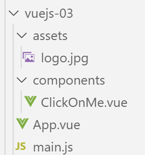
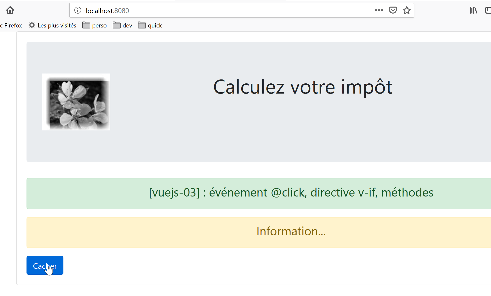
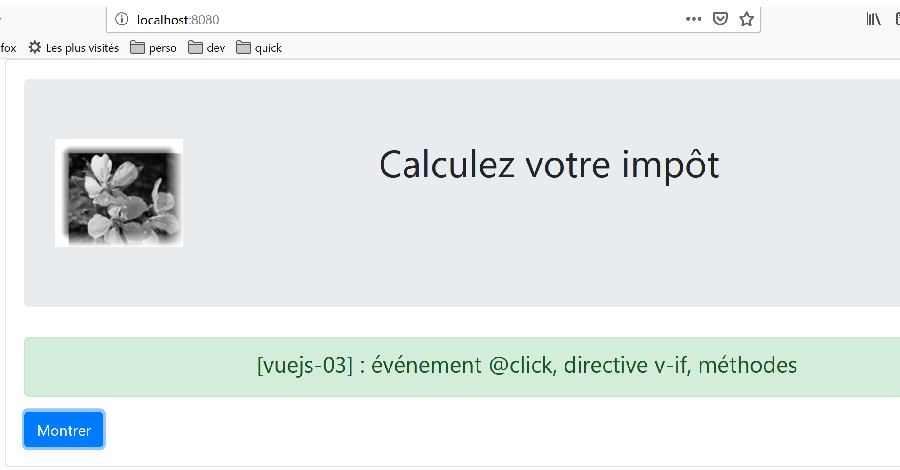

5. Progetto [vuejs-03]: gestione degli eventi
Il progetto [vuejs-03] introduce due concetti:
- la gestione di un evento [clic] su un pulsante;
- la direttiva [v-if] che consente di visualizzare un blocco HTML in modo condizionale;
La struttura ad albero del progetto è la seguente:

5.1. Lo script principale [main.js]
Lo script [main.js] rimane invariato:
// importazioni
import Vue from 'vue'
import App from './App.vue'
// plugin
import BootstrapVue from 'bootstrap-vue'
Vue.use(BootstrapVue);
// bootstrap
import 'bootstrap/dist/css/bootstrap.css'
import 'bootstrap-vue/dist/bootstrap-vue.css'
// configurazione
Vue.config.productionTip = false
// istanziazione progetto [App]
new Vue({
render: h => h(App),
}).$mount('#app')
5.2. Il componente principale [App.vue]
Il componente principale [App.vue] utilizza il componente [ClickOnMe] al posto del componente [HelloBootstrap]:
<template>
<b-container>
<b-card>
<!-- Bootstrap Jumbotron -->
<b-jumbotron>
<!-- riga -->
<b-row>
<!-- colonna di larghezza 4 -->
<b-col cols="4">
<img src="./assets/logo.jpg" alt="Cerisier en fleurs" />
</b-col>
<!-- colonna di larghezza 8 -->
<b-col cols="8">
<h1>Calculez votre impôt</h1>
</b-col>
</b-row>
</b-jumbotron>
<!-- componente -->
<ClickOnMe msg="Information..." />
</b-card>
</b-container>
</template>
<script>
import ClickOnMe from "./components/ClickOnMe.vue";
export default {
name: "app",
components: {
ClickOnMe
}
};
</script>
5.3. Il componente [ClickOnMe]
Il componente [ClickOnMe] introduce i nuovi concetti:
<template>
<div>
<!-- messaggio su sfondo verde -->
<b-alert show variant="success" align="center">
<h4>[vuejs-03] : événement @click, directive v-if, méthodes</h4>
</b-alert>
<!-- messaggio su sfondo giallo -->
<b-alert show variant="warning" align="center" v-if="show">
<h4>{{msg}}</h4>
</b-alert>
<!-- pulsante blu -->
<b-button variant="primary" @click="changer">{{buttonTitle}}</b-button>
</div>
</template>
<script>
export default {
name: "ClickOnMe",
// parametri del componente
props: {
msg: String
},
// attributi del componente
data() {
return {
// titolo del pulsante
buttonTitle: "Cacher",
// controlla la visualizzazione del messaggio
show: true
};
},
// metodi
methods: {
// mostra/nasconde il messaggio
changer() {
if (this.show) {
// nasconde il messaggio
this.show = false;
this.buttonTitle = "Montrer";
} else {
// il messaggio viene visualizzato
this.show = true;
this.buttonTitle = "Cacher";
}
}
}
};
</script>
Commenti
- righe 4-6: un avviso verde Bootstrap. Il numero di colonne occupate non è indicato. Vengono quindi utilizzate le 12 colonne di Bootstrap;
- righe 8-10: un avviso giallo di Bootstrap:
- riga 8: la direttiva [v-if] di [Vue.js] controlla la visibilità di un blocco HTML. L'avviso è qui controllato da un valore booleano [show] (riga 29). Se [show==true], l'avviso sarà visibile, altrimenti non lo sarà;
- riga 9: l’avviso visualizza un messaggio [msg] che è una proprietà (righe 20-22) del componente;
- riga 12: un pulsante di colore blu su cui si clicca per nascondere/mostrare l'avviso [warning];
- righe 16-48: il codice jS del componente. Questo codice regola il funzionamento dinamico del componente:
- righe 20-22: le proprietà del componente;
- righe 24-31: gli attributi del componente;
Qual è la differenza tra [propriétés] e [attributs] di un componente, tra i campi [props] e [data] dell’oggetto esportato dal componente alle righe 17-47?
- Come abbiamo già visto, le proprietà [props] di un componente sono parametri del componente. I loro valori vengono impostati dall’esterno del componente. Un componente A che utilizza un componente B con le proprietà [prop1, prop2, ..., propn] lo utilizzerà nel modo seguente: <B :prop1=’val1’ :prop2=’val2’ ...> ;
- l’oggetto restituito dalla funzione [data] delle righe 24-31 rappresenta lo stato del componente o gli attributi del componente. Questo stato viene gestito dai metodi del componente (righe 33-46). Il tag <template> delle righe 1-14 utilizza sia elementi [propriétés] che [attributs]:
- i valori delle proprietà sono impostati da un componente padre;
- i valori degli attributi vengono inizialmente impostati dalla funzione [data] e possono poi essere modificati dai metodi;
- in entrambi i casi, la rappresentazione visiva reagisce immediatamente alle modifiche di una proprietà (componente padre) o di un attributo (metodo del componente). Si parla quindi di interfaccia reattiva;
Nel [template] di un componente, non vi è alcuna differenza tra una proprietà [prop] e un attributo [data]. Per stabilire se un dato dinamico di [template] debba essere inserito nell’attributo [props] o nell’oggetto restituito dalla funzione [data], è sufficiente chiedersi chi imposta il valore di tale dato:
- se la risposta è il componente padre, allora il dato verrà inserito nell’attributo [props];
- se la risposta è il metodo che gestisce tale evento del componente, allora il dato verrà inserito nell’oggetto restituito dalla funzione [data];
Il [template] utilizza qui i seguenti dati dinamici:
- [show], riga 8. Questo dato viene elaborato internamente dal metodo [changer], che gestisce l'evento [click] relativo al pulsante della riga 12. Si tratta quindi di un attributo creato dalla funzione [data] (riga 29);
- [msg], riga 9. Si tratta di un messaggio impostato dal componente padre. Viene quindi inserito nell’attributo [props] (riga 21);
- [buttonTitle], riga 12. Questo dato viene gestito internamente dal metodo [changer] che gestisce l’evento [click] sul pulsante della riga 12. Si tratta quindi di un attributo creato dalla funzione [data] (riga 27);
- i nomi degli attributi [name, props, data, methods] dell’oggetto esportato dal componente sono predefiniti. Non è possibile utilizzare altri nomi;
- riga 12: l’attributo [@click] del pulsante serve a indicare il metodo che deve reagire al clic sul pulsante. Questo metodo deve trovarsi nella proprietà [methods] del componente;
- riga 33: l’attributo [methods] del componente raggruppa tutti i suoi metodi. Nella maggior parte dei casi si tratta di funzioni che reagiscono a un evento del componente;
- righe 35-46: il metodo [changer] viene chiamato quando l’utente fa clic sul pulsante:
- se l’avviso [warning] è visualizzato, viene nascosto e il testo del pulsante diventa [Montrer] (riga 39);
- se l’avviso [warning] è nascosto, viene visualizzato e il testo del pulsante diventa [Cacher] (riga 43);
- per visualizzare/nascondere l'avviso [warning], si modifica il valore del booleano [show] (righe 38 e 42);
- quando un metodo deve fare riferimento all’attributo [attr] restituito dalla funzione [data], si scrive [this.attr] (righe 38 e 42). Ciò significa che gli attributi dell’oggetto restituito dalla funzione [data] sono attributi diretti del componente [this];
5.4. Esecuzione del progetto

Il risultato è il seguente:

